México 2 - 3 Inglaterra | Mundial 2026 Inglaterra sobrevive al caos y elimina a México en el
último partido en el Azteca
- Un doblete de Bellingham y un penalti de Kane mete a los Three Lions en cuartos
- Los goles de México fueron de Julián Quiñones y Raúl Jiménez desde los once metros
México e Inglaterra protagonizaron un duelo épico en una noche irrepetible, marcada por la
despedida mundialista del legendario Estadio Azteca, rebautizado durante el torneo como
Estadio
Ciudad de México, que acogió su último partido en esta Copa del Mundo. No defraudó el
partido
que acabó con un 2-3 en el marcador después de dos penaltis, una roja y un doblete de
Bellingham.
Festival de goles
Javier Aguirre confío en los mismos hombres que le llevaron hasta aquí, repitió el once
de
dieciseisavos ante Ecuador. México empezó mordiendo muerde una Inglaterra que tenía más
la
pelota. La primera del partido fue para los anfitriones, un cabezazo de Raúl Jiménez que
salvó
Pickford, pero los primeros goles, fueron para los 'Three Lions'.
Con dos minutos de diferencia, Jude Bellingham fue capaz de marcar dos goles (los
primeros
que
México encaja en este Mundial). En el 36' y en el 38' se adelantó Inglaterra. El
primero, un
cabezazo del jugador del Rea Madrid con asistencia de Bukayo Saka, en el segundo, la
asistencia
se la apunta Harry Kane.
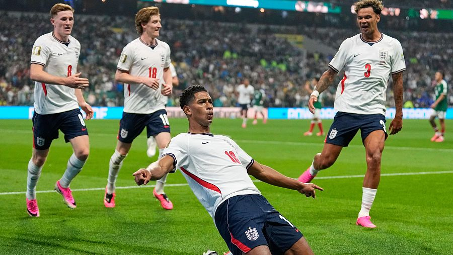
México tenía dos opciones tras el doblete de Jude, hundirse o luchar, y eligió la
segunda.
Recortó diferencias en el minuto 42 con una volea de Julián Quiñones que ponía el 1-2.
El
jugador del Al-Qadisiyah acudía al rescate de la tricolor.
Tuvo un par de ocasiones más México antes del descanso pero Jordan Pickford consiguió
defender
su portería ante los intentos de Raúl Jiménez de empatar el partido.
Inglaterra, con uno menos
Al inicio de la segunda parte, los de Tuchel perdieron a uno de sus hombres tras una
durísima
entrada de Jarell Quansah a Jesús Gallardo. Tras revisar el monitor del VAR, el árbitro,
Alireza
Faghani expulsa al defensor inglés y deja a Inglaterra con 10.
>Algo que no le importó a la selección inglesa porque tienen a Kane, que los salvó cuando
estaban
en el peor momento. Un penalti a favor de Inglaterra les hizo aumentar su distancia en
el
marcador. Raúl Rangel derribó a Anthony Gordon dentro del área y Harry Kane hizo el 1-3
desde
los once metros.
Ese no sería el único penalti del partido. Una patada del propio Kane a Brian Gutiérrez
hizo
que
el colegiado fuese al VAR y pitase penalti a favor de los mexicanos.
Raúl Jiménez tuvo
su
premio
después de intentar ver portería durante todo el partido, y no le tembló el pulso desde
el
punto
de penalti en un Azteca a rebosar. Volvía México a recortar distancias con el 2-3 en el
marcador.
Los de Javier Aguirre lo intentaron todo en los últimos minutos del encuentro, pero la
pelota
no
quiso entrar en la portería, Pickford también tuvo mucho que ver para evitar el empate
en un
partido que empezó una hora más tarde de lo previsto por culpa de una tormenta
eléctrica.
Se despide México del Mundial 2026 (es la segundo anfitriona en caer después de Canadá)
el
mismo
día que se despide el Azteca. El único estadio que puede presumir de haber sido sede de
tres
Mundiales. El Coloso mexicano escribió su última página mundialista, con un ambiente, y
un
partido, a la altura de su leyenda.
Inglaterra se mete en cuartos, su próximo objetivo será ganar a la gran Noruega de
Haaland.
Resume, México vs. Inglaterra | Mundial 2026
México
2 - 3 Inglaterra
Julián Quiñones42'
Jiménez69'
Bellingham36'
Bellingham38'
Kane60'
Fuente
Brasil 1 - 2 Noruega | Mundial 2026 Erling Haaland ejerce de killer para liquidar a Brasil y
ganarse unos cuartos históricos para Noruega
- Su doblete acaba con el sueño mundialista de Carlo Ancelotti y Vinícius Júnio
- Nyland sostiene a los suyos desde la portería parando un penalti con 0-0
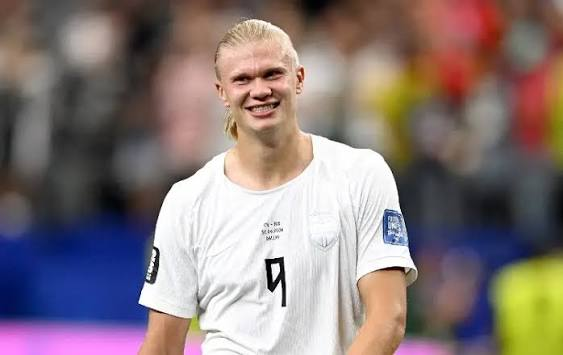
Erling Haaland es un galáctico. No cabe absolutamente ninguna duda. Ante Brasil, el
delantero
del Manchester City fue autor de un espectacular doblete que clasifica a Noruega para los
cuartos de final del Mundial de fútbol, una cota que nunca habían alcanzado.
Sus dos goles son la definición de lo que te debe aportar un delantero. El primero, de
poderoso
remate de cabeza, viene de ganarle la partida a los centrales brasileños. Concretamente de
ser
superior en su duelo a Gabriel Magalhães. Le tiene tomada la medida al defensor del Arsenal.
El
segundo, de cañonazo desde fuera del área, es un disparo de autoridad. Un "aquí mando yo" y
marco "cuando quiero y cómo quiero". Con un delantero así, se puede decir sin tapujos.
Noruega
son Haaland y 10 más.
Brasil desperdicia un penalti
El encuentro tuvo un comienzo frenético. Noruega avanzó entre las líneas brasileñas y
en el
tercer minuto de partido encontró a Alexander Sorloth en posición ventajosa, que
puso el
balón
en el punto de penalti. Allí apareció Patrick Berg, que logró batir a Alisson Becker
para
alegría de los aficionados vikingos. Sin embargo, los de Carlo Ancelotti respiraron
aliviados al
ver al juez de línea con su bandera levantada. Fuera de juego.
Prácticamente ese fue el mayor susto que consiguieron dar los noruegos a Brasil.
Tenían más
balón, pero casi siempre lo movían sin la profundidad necesaria para hacer daño. Se
notaba
el
pánico a perder el esférico y que sus rivales salieran en estampida apoyándose en la
rapidez
de
Vinícius.
El jarro de agua fría que se llevaron los de Stale Solbakken se tornó en puro hielo
nórdico
cuando en la otra área fue claramente derribado Matheus Cunha por la pierna de
Kristoffer
Ajer.
El árbitro necesitó la ayuda del VAR, pero las imágenes no ofrecían duda. La
sorpresa vino
de
parte del lanzador. Vinícius dejó su sitio a Bruno Guimaraes, al que Orjan Nyland le
adivinó
la
intención y logró despejar el balón. Apenas había transcurrido un cuarto de hora y
ya habían
pasado más cosas que en algunos partidos completos.
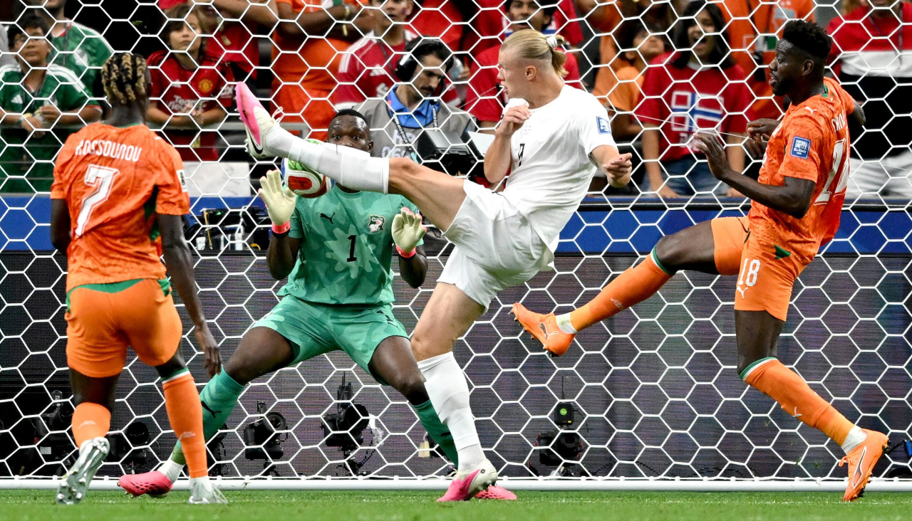
Conscientes de lo que estaba en juego, ambas selecciones levantaron el pie del
acelerador.
Las
ocasiones se sucedieron con cuentagotas en lo que restaba de primera parte. Vinícius
tuvo
una
clarísima tras un error de Martin Odegaard dentro del área, pero volvió a aparecer
Nyland.
En el
otro lado, Odegaard y Haaland también pusieron a prueba a Alisson, que solventó sin
excesivos
apuros.
Cambios para la segunda parte
Solbakken sorprendió con un doble cambio en el descanso, dejando fuera a Sorloth y Nusa,
dos
de
sus hombres de ataque referentes. Parecía fiarlo todo a las opciones de Haaland. Su
confianza
obtuvo recompensa.
Todo lo contrario le pasó a Ancelotti. Metió a Endrick a los pocos minutos de la
reanudación
y
la tuvo nada más salir gracias a un regalo de Vinícius. Un mano a mano con Nyland que el
jugador
del Real Madrid, cedido este curso en el Lyon, envió fuera.
Parecía Brasil más cerca del gol. Pero sus intentos chocaban una y otra vez con Nyland.
El
meta
del Sevilla era el héroe noruego con una doble intervención ante Rayan y Bruno Guimaraes
que
mantuvo vivo a su equipo.
Aparece el Haaland más letal
Ancelotti quería evitar la prórroga y recurrió a Neymar. Pero después de la pausa de
hidratación,
el partido cambió de signo y empezó a jugarse realmente a lo que Noruega quería.
Haaland
empezó
a despertar de su letargo y tuvo sus primeros movimientos peligrosos cerca del área
de
Alisson.
Cuando el partido empezaba a oler a prórroga, en la que se veía con más argumentos
físicos a
Noruega que a Brasil, Haaland decidió que el partido iba a acabarse en el tiempo
reglamentario.
Schjelderup, que había entrado desde el banquillo, puso un centro perfecto al
corazón del
área.
Allí apareció Haaland, imponente, para elevarse por encima de todos y firmar un
cabezazo
picado,
ajustado e inapelable. Noruega se ponía por delante y Brasil quedaba contra las
cuerdas.
La ‘canarinha’ reaccionó con orgullo. Se volcó, apretó y rozó el empate en una acción
increíble
en la que Nyland, otra vez Nyland, evitó un gol que parecía hecho. Y entonces llegó
la
sentencia. En el minuto 90, Haaland recogió un balón en la frontal y soltó un
zurdazo seco,
cruzado y ajustado que dejó sin respuesta a Alisson.
Era su segundo gol de la noche, el
tanto
que mandaba a Brasil a casa y confirmaba a Noruega como una de las sensaciones de
este
Mundial.
El partido moría, pero hubo tiempo aún para el epílogo. Un nuevo penalti para Brasil
fue
aprovechado por Neymar para certificar que ha estado en el Mundial 2026. Pero su gol
llegó
demasiado tarde. Noruega hacía historia y se clasificaba por primera para cuartos.
Y ojo con Haaland. Porque el gigante noruego iguala también a Messi y Mbappé como
máximos
goleadores del torneo con 7 tantos. Son de otra galaxia… y a juzgar por los números,
Vinícius
Júnior no. Noruega avanza y Brasil se despide.
Fuente
El Real Madrid ficha al neerlandés Denzel Dumfries hasta junio de 2030
- El conjunto blanco anuncia su cuarta incorporación del verano para la temporada que viene
- Dumfries refuerza el lateral derecho y competirá con Trent Alexander Arnold por la
titularidad
El Real Madrid ha anunciado el acuerdo con el Inter de Milán para la contratación del neerlandés
Denzel Dumfries, que se compromete con el club blanco hasta junio de 2030, informa en un
comunicado. Se trata del cuarto fichaje de la entidad merengue en este mercado de verano.
El Madrid sigue reforzando la defensa para el proyecto que encabezará el portugués José Mourinho
a partir de la próxima temporada, que arranca el 15 de agosto. El español Marc Cucurella y el
francés Ibrahima Konaté fueron los primeros zagueros, más el portugués Bernardo Silva para el
centro del campo.
Al igual que Cucurella, Dumfries tenía contrato en vigor con su club hasta la fecha, aunque no
se han anunciado cifras oficiales. No obstante, según los medios especializados el mismo está en
una horquilla de entre 20 y 30 millones de euros. El lateral de 30 años llega para cubrir la
baja de Dani Carvajal y competirá por el puesto con el inglés Trent Alexander Arnold.
El neerlandés también es internacional con su selección, aunque al contrario que los otros ya no
está en plena disputa del Mundial 2026 al haber quedado Países Bajos eliminada por Marruecos en
dieciseisavos de final, en la tanda de penaltis.
El presidente del Madrid, Florentino Pérez, anunció en campaña electoral una oferta por 150
millones por un jugador 'top', que resultó ser el argentino Julián Álvarez, del Atlético de
Madrid. El club rojiblanco rechazó la oferta y se espera un nuevo intento por otro jugador de
ataque de talla mundial.
De momento, la entidad de Concha Espina ha anunciado sendos desmentidos por ofertas similares al
Chelsea por Enzo Fernández y al Bayern Múnich por Michael Olise. Pero no se descarta que en lo
que resta de verano el Madrid realice alguna contratación millonaria para reforzar su línea
medular o delantera.
Fuente
Isaac del Toro se lleva la segunda etapa del Tour de Francia en Barcelona y se la dedica a
Pogacar
- Jonas Vingegaard, superado en el sprint, mantiene el liderato en la general
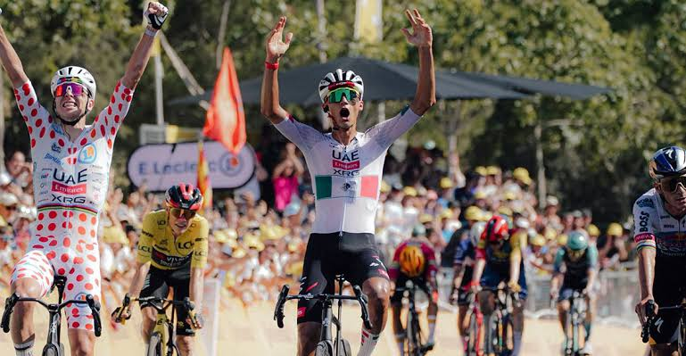
El mexicano Isaac del Toro se ha adjudicado la segunda etapa del Tour de Francia 2026, entre
Tarragona y Barcelona, en un emocionante sprint en el que ha contado con un gregario de lujo:
Tadej Pogacar. En la general se mantiene el danés Jonas Vingegaard, que ha entrado en el mismo
grupo de favoritos, pero se ha visto superado en la meta.
La victoria del corredor del UAE Team tiene más mérito teniendo en cuenta que ha tenido que
recuperar una desventaja de dos minutos y medio. Después de la bajada del Alto de Begues, de
segunda categoría en mitad del recorrido, el mexicano ha tenido un problema que le ha obligado a
cambiar de bicicleta, pero ha podido reengancharse.
Hasta ese punto la carrera había tenido dos héroes. En el km 4 lanzó el ataque Felix Engelhardt,
seguido a rueda por Van den Broek. A ellos se unió Alex Molenaar, neerlandés del Caja Rural
formado en Olot; corría en casa. Los tres protagonizaron la escapada del día, que fue
neutralizada a 10 km de la meta cuando sólo quedaban el campeón de Alemania y el del equipo
español.
Molenaar fue el más combativo, sumando 25 valiosos puntos en el sprint intermedio de Viladecans y
la subida a Begues, aunque en esta sólo premiaban con cinco puntos y no se le presupone rival
para el maillot de lunares a Pogacar el día 26. Pero la gloria en este día no se la quitó nadie.
Los tres, que luego fueron dos, pasaron por delante del pelotón por una ruta bordeando la costa
catalana: Vilanova i la Geltru, Sitges, Castelldefels... pero el circuito urbano que esperaba en
la Ciudad Condal era harina de otro costal: tres vueltas coronando el Montjuic como plato
fuerte.
Desde la primera rampa aparecieron los dos colosos y favoritos al triunfo final para marcarse
mutuamente. Pero después de la tercera y última subida, el que quiso probar fortuna fue el
español Juan Ayuso, que se lanzó cuesta abajo anticipando el sprint final a un km y medio de la
meta.
Vingegaard sigue líder; Ayuso cede el maillot blanco
El alicantino, quinto en la meta, pagó el esfuerzo cediendo unos segundos que le costaron el
maillot blanco de mejor joven, que pasa ahora a manos del mexicano Del Toro; antiguo compañero y
'rival' en el Giro de Italia de 2025. En la general es quinto también a 19 segundos. A su rueda
llegó otro de los a priori favoritos, el francés Paul Seixas, y ambos cedieron tres segundos. El
joven ciclista del Decathlon también sufrió una avería a 40 km de la meta y tuvo que recuperar
terreno, pero acabó con el grupo de cabeza.
La general queda comandada con Vingegaard, seis segundos por delante de Pogacar y 15 por delante
del belga Remco Evenepoel, que tuvo su papel protagonista el belga en los km finales, tratando
de sacar una ventaja que al final sólo le valió para entrar tercero en la meta, justo por
delante de un Vingegaard que terminó sufriendo.
Lunes: etapa pirenaica y final en suelo francés
Para este lunes el pelotón se adentra en el terreno montañoso, cruzando los Pirineos para entrar
ya en Francia. La salida seguirá siendo en nuestro país, en Granollers, con llegada a Les Angles
después de 195,5 interminables kilómetros; llegada en alto de tercera categoría, previo paso por
un 'primera' en el Col de Toses y otro tercera en el Col del Calvaire.
Será la primera ocasión en que se pueda ver una batalla entre los dos grandes favoritos a subirse
a lo más alto del podio en los Campos Elíseos de París: Vingegaard y Pogacar. Lo veremos a
partir de las 12:20 en directo por RTVE Play.
Fuente
Las noches tropicales se apoderan de España y dormir será casi imposible este fin de semana
Tendremos noches tropicales en buena parte del mapa. En muchas comunidades no bajarán de los 20ºC
en toda la noche y algunas, incluso, de los 25ºC.
El calor vuelve a la carga e irá a más durante el fin de semana, sobre todo a partir del viernes
o sábado. Las máximas alcanzarán los 40ºC en numerosas regiones, pero las temperaturas nocturnas
no se quedarán atrás.
Las mínimas serán muy altas y tendremos noches tropicales en buena parte del mapa. En muchas
comunidades no bajarán de los 20ºC en toda la noche y algunas, incluso, de los 25ºC.
La pasada madrugada las mínimas han sido muy altas. En numerosas poblaciones del sur, centro
peninsular, además del Mediterráneo, no se ha bajado de los 25ºC, lo que supone una noche
ecuatorial. En Canarias incluso no se ha bajado de los 27ºC.
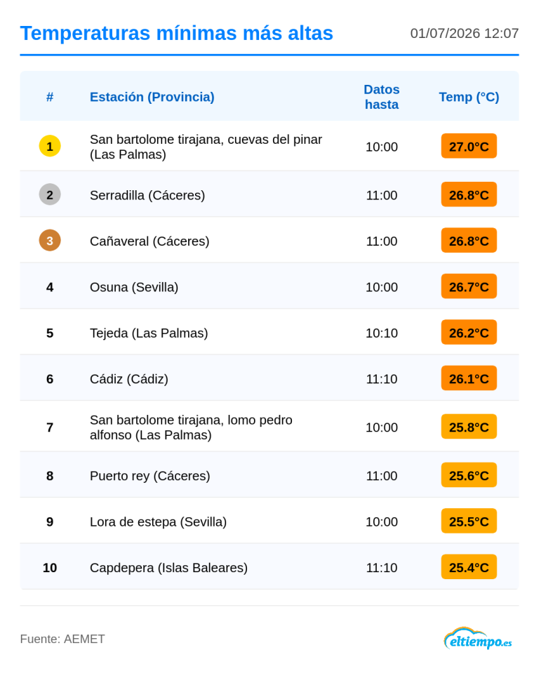
Noches tropicales cada día en más zonas
El avance de una dorsal sobre España, que día tras día se irá reforzando, hará que las
temperaturas comiencen a escalar. Sobre todo lo harán a partir del viernes o sábado, cuando los
termómetros vuelvan a dispararse.
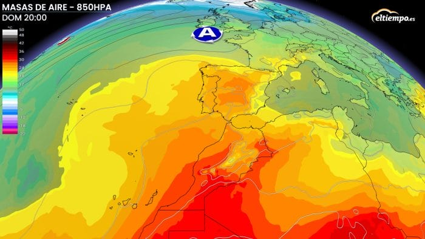
El calor del próximo fin de semana será intenso y también se notará por las noches. Hasta
entonces, las noches serán tropicales en buena parte de Extremadura, oeste de Castilla-La
Mancha, Andalucía, en todo el litoral mediterráneo y en las islas.
Desde el sábado y sobre todo de cara al domingo, las mínimas no bajarán de los 20ºC en muchas
más zonas. Interior y sur de Galicia, Madrid, sur de Castilla y León y buena parte de
Castilla-La Mancha y en el valle del Ebro, serán algunas de ellas.
Será difícil dormir: las mínimas irán escalando
Con esta subida, habrá además algunas regiones que no bajen de los 25ºC o incluso más. Ciudades
del suroeste, como Cáceres, Badajoz o Sevilla registrarían esas mínimas.
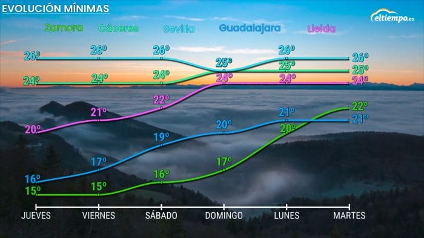
En el Cantábrico incluso tendremos mínimas entorno a los 17-20ºC y tan solo quedarían por debajo
de los 20ºC en puntos del interior norte. En el norte y este de Castilla y León, por ejemplo,
las mínimas serán de unos 15-17ºC.
Fuente
Los océanos baten récords y la ola de calor dispara la temperatura del Mediterráneo
La temperatura del Mediterráneo se ha disparado tras la ola de calor europea, con anomalías de
hasta 6 ºC en algunas zonas del sector occidental.
Las temperaturas en las últimas semanas no solo han sido extremas en tierra. Los océanos también
están sufriendo un aumento térmico muy significativo y ya se han batido récords a nivel global,
según datos de Copernicus.
Además, el Mediterráneo ha registrado en los últimos días anomalías de hasta 6ºC por encima de lo
normal, como consecuencia de la última ola de calor que abrasó Europa.
Las temperaturas del mar rompen récords a nivel global
Según los datos del Servicio de Cambio Climático de Copernicus, el día 21 de junio la superficie
del mar a nivel global registró una temperatura de 20.86ºC, superando por poco los datos de 2003
y 2024. Esto supone un nuevo récord para la época del año.
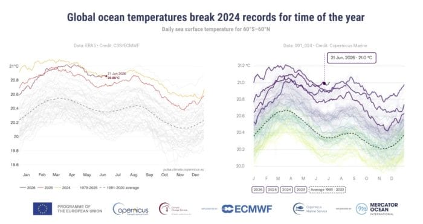
Por su parte, el CMEMS, es decir el Servicio de Vigilancia Marina de Copernicus, registró ese
mismo día una temperatura de 21ºC. Ambos datos suponen récords de temperatura superficial
marina.
¿Qué supone este récord en los océanos?
Según los expertos de Copernicus, estos récords concuerdan con las altas temperaturas de la
superficie del mar en el Pacífico norte en los últimos meses y también con el inicio de El Niño.
Sin embargo, no se puede justificar simplemente a las condiciones de El Niño, ya que en junio de
2024, cuando la superficie del mar alcanzó el último récord, el ENSO se encontraba en
condiciones de neutralidad.
Unas temperaturas tan elevadas en la superficie marina suponen, entre otros, un aumento en la
evaporación hacia la atmósfera y así, un aporte extra de humedad a las tormentas.
En estos casos, las tormentas pueden ser más fuetes y dejar precipitaciones muy intensas,
provocando inundaciones y fenómenos más extremos.
También provocan que el deshielo aumente, suba el nivel del mar y también se producen cambios en
los ecosistemas marinos.
Es muy probable que con las condiciones actuales esto no sea un récord puntual y que en los
próximos meses se sucedan nuevos. Además hay que tener en cuenta que estamos en junio y que los
picos de calor en los océanos se suelen registrar a finales de verano.
La ola de calor en Europa también calentó el Mediterráneo
A nivel más regional, los datos de Copernicus del 29 de junio, mostraron anomalías en la
temperatura superficial el mar hasta 6ºC por encima de la media en algunas partes del
Mediterráneo occidental.
Fuente
Mario Picazo avisa: la ola de calor elevará los termómetros hasta los 44 ºC
El día más caluroso será el lunes y aunque las temperaturas irán bajando el intenso calor no se
va del todo esta semana
La semana arranca con la segunda ola de calor del verano plenamente instalada sobre España. El
lunes 6 será, previsiblemente, la jornada más extrema del episodio, con una masa de aire muy
cálido de origen subtropical reforzada por una potente dorsal anticiclónica.
A partir del martes comenzará un descenso gradual de las temperaturas por el noroeste y el
Cantábrico, aunque el calor intenso continuará durante varios días en buena parte del interior
peninsular, especialmente en los valles del Guadalquivir, Guadiana, Tajo y Ebro.
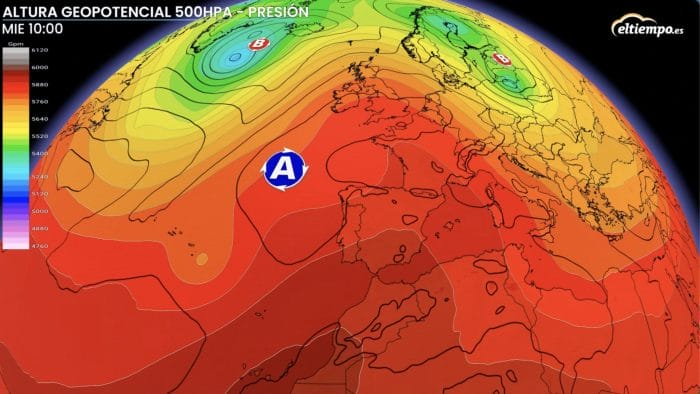
Poca lluvia y en forma de tormentas en estas zonas
Las precipitaciones serán muy escasas en la mayor parte del país, pero la fuerte insolación
favorecerá el crecimiento de nubes de evolución durante las tardes.
Entre el lunes y el jueves podrán desarrollarse tormentas localmente fuertes en áreas montañosas
de la Cordillera Cantábrica, Pirineos, Sistema Ibérico y, de forma más aislada, en puntos del
Sistema Central y del este peninsular. Algunas de estas tormentas podrán ir acompañadas de
aparato eléctrico, rachas intensas de viento e incluso granizo, aunque dejarán cantidades de
lluvia muy irregulares y, en muchos casos, escasas.
En amplias zonas del centro, sur y litoral mediterráneo continuará predominando el tiempo seco,
lo que mantendrá muy elevado el riesgo de incendios forestales.
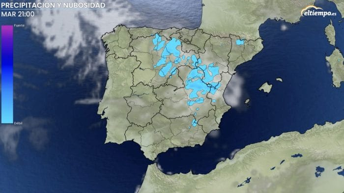
El calor bajará algo a lo largo de la semana pero seguirá siendo intenso
El calor será el gran protagonista de la semana. El lunes se alcanzará el pico de la ola de
calor, con máximas superiores a los 40 °C en numerosas comarcas del interior y valores que
podrán rondar los 42 °C en los grandes valles del suroeste.
A partir del martes las temperaturas comenzarán a bajar lentamente por Galicia y el Cantábrico,
descenso que se extenderá progresivamente hacia el centro peninsular durante la segunda mitad de
la semana. Sin embargo, el valle del Guadalquivir, Extremadura, amplias zonas de Castilla-La
Mancha, el valle del Ebro y algunos sectores del sureste seguirán registrando temperaturas muy
elevadas.
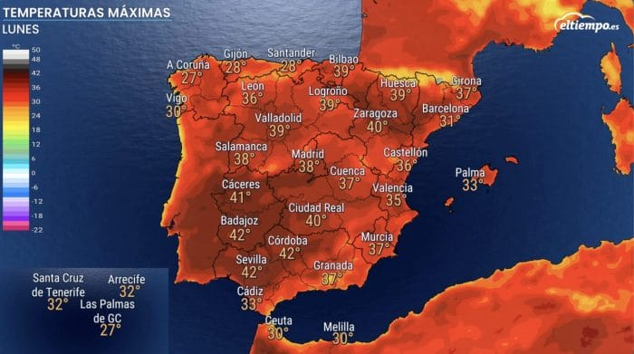
Entre las capitales y ciudades donde se esperan las máximas más altas. Destacan Córdoba, Sevilla
y Badajoz, con valores de entre 41 y 42 °C. También podrán alcanzarse 41 °C en Zaragoza, 40 °C
en Ciudad Real, 40 °C en Toledo y alrededor de 40 °C en Jaén durante las jornadas más cálidas.
En Madrid las máximas oscilarán entre 37 y 39 °C, mientras que en Pamplona el lunes se podrán
alcanzar puntualmente los 40 °C, una situación poco habitual para la capital navarra. En Palma
se prevén máximas de 37 a 38 °C, especialmente en el interior de Mallorca.
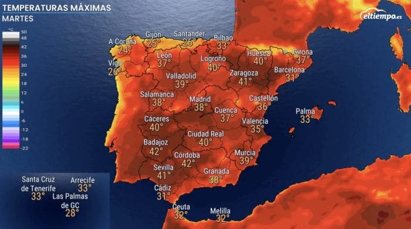
Las noches seguirán siendo muy cálidas. En muchas zonas del litoral mediterráneo, el valle del
Guadalquivir, el valle del Ebro y grandes ciudades del centro las mínimas no bajarán de los 22 a
25 °C, con noches tropicales e incluso localmente tórridas que dificultarán el descanso. Solo en
el extremo norte y en áreas de montaña se notará un alivio más evidente conforme avance la
semana.
Fuente
Alerta naranja por calor en Madrid: estas son las zonas donde se alcanzarán los 39 grados
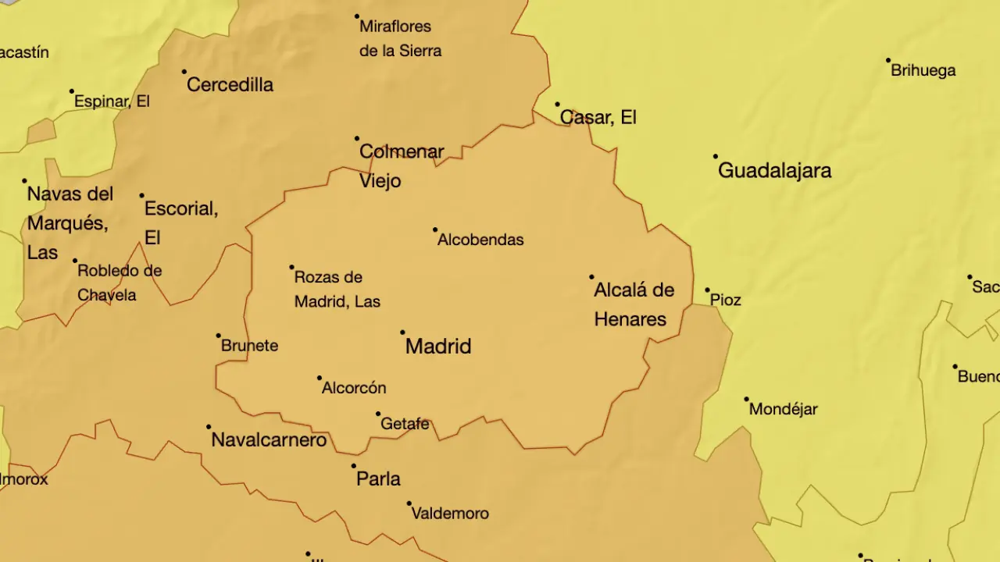
- Los avisos afectarán a la Sierra de Madrid, donde se prevén máximas de 37 grados, y a las
zonas Metropolitana y Henares.
- Temperaturas muy altas, "peligro importante" y posible ola de calor para este fin de semana
La Agencia Estatal de Meteorología (Aemet) ha activado para este sábado, 4 de julio, avisos de
nivel naranja y amarillo en la Comunidad de Madrid ante un episodio de calor intenso que dejará
temperaturas de hasta 39 grados en distintos puntos de la región.
Los avisos de nivel naranja por altas temperaturas permanecerán activos hasta las 20.59 horas.
Afectarán a la Sierra de Madrid, donde se prevén máximas de 37 grados, y a las zonas
Metropolitana y Henares, donde los termómetros alcanzarán los 39 grados durante las horas
centrales del día.
Además, la Aemet mantiene un aviso amarillo en las comarcas del Sur, Vegas y Oeste por
temperaturas máximas de hasta 38 grados. No obstante, el organismo meteorológico advierte de que
de forma puntual podrían alcanzarse los 39 grados en el Corredor del Henares, el sur del río
Jarama y la Vega de Aranjuez, valores propios del nivel naranja.
Ante este episodio de altas temperaturas, las autoridades recomiendan evitar la exposición
prolongada al sol durante las horas centrales del día, mantenerse bien hidratado, reducir la
actividad física al aire libre y prestar especial atención a las personas mayores, los menores y
quienes padecen enfermedades crónicas.
Fuente
El PP arranca una nueva etapa tras cerrar los pactos autonómicos con la vista puesta en preparar
"la madre de todas las batallas"
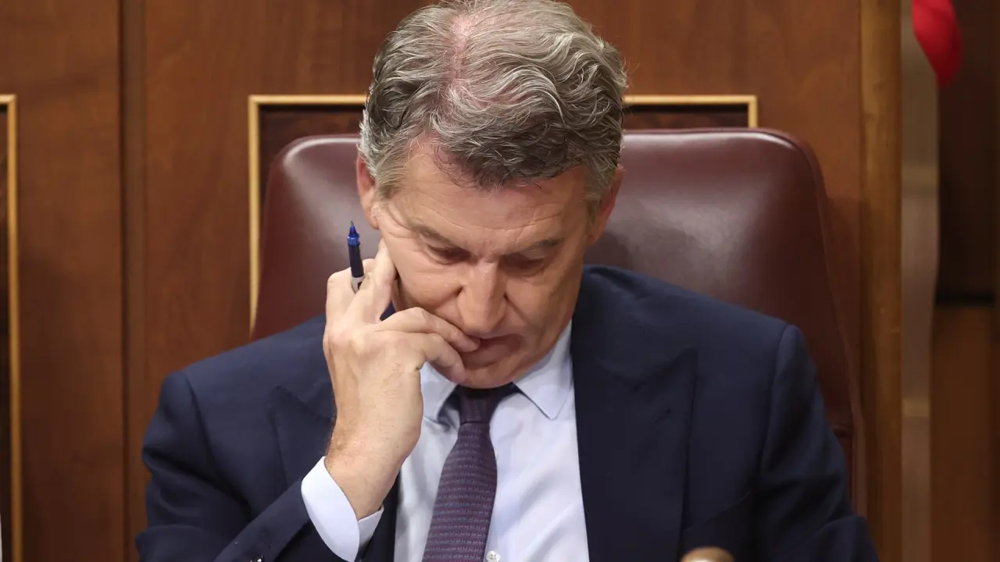
Al finalizar las elecciones andaluzas, el presidente del Partido Popular, Alberto Núñez Feijóo,
activó el cronómetro electoral y se marcó como objetivo tener una agenda cargada de proyectos
que ofrecer a los españoles hasta llegar a la cita con las urnas. Sin embargo, esa intención
quedó un poco diluida por los acuerdos que debían consumarse tanto en Andalucía como en Castilla
y León y por las reacciones diarias a los escándalos de corrupción que rodean al presidente del
Gobierno, Pedro Sánchez. Pero ahora, tras cerrar el único fleco pendiente en términos
autonómicos con la investidura de Juanma Moreno en Andalucía, Génova arranca una nueva etapa con
la vista puesta en preparar "la madre de todas las batallas". Ahora sí, está toda la carne
puesta en el asador mirando hacia las elecciones generales.
Si bien es cierto que la negociación entre Vox y PP en Andalucía ha distado mucho de las que se
produjeron en las otras autonomías para alcanzar un pacto de gobierno, pues las direcciones
nacionales no han estado tan implicadas, Génova tenía inevitablemente la atención dividida. Pero
ahora, ya puede apartar la mirada de la política autonómica, toda vez que ha logrado mantener a
cuatro presidentes más dirigiendo sus respectivos territorios, para centrarse en las elecciones
generales. "Acaba el momento en que teníamos que poner un ojo en la política nacional y otro en
la autonómica", reconocen.
Los resultados de las últimas elecciones autonómicas celebradas desde diciembre -Extremadura- y
hasta el mes de mayo -Andalucía- suponen un acicate para la carrera hacia la Moncloa. En
Extremadura, Aragón y Andalucía, el PP saca 11, 8 y 25 escaños, respectivamente, al PSOE.
"Salimos con el PP reforzado y el PSOE más débil que nunca", continúan celebrando, por lo que se
ven "mucho más fuertes" para afrontar "la madre de todas las batallas". Además, consideran que
durante la campaña electoral el discurso basado en que "Vox da miedo" ya no servirá, pues han
gobernado en coalición y no se ha llevado a cabo ninguna decisión política "contra los derechos
sociales".
Fuente
Hacienda reúne a las comunidades este lunes para negociar el déficit, pero sin la financiación
autonómica en el orden del día
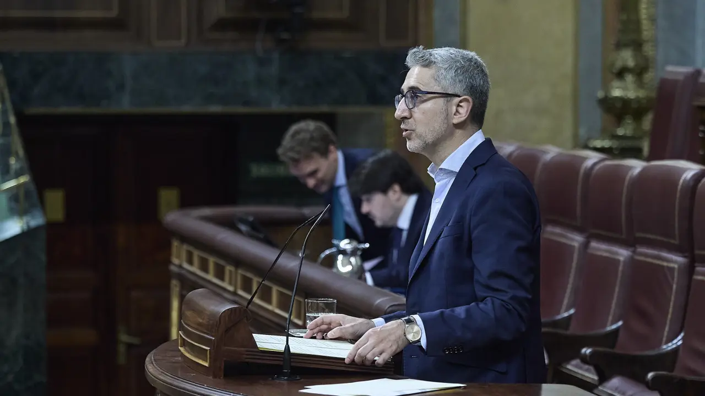
El Ministerio de Hacienda reúne este lunes a los consejeros de Economía y Hacienda de las
comunidades autónomas para presentarles los límites de déficit y deuda pública con los que el
Gobierno quiere elaborar los presupuestos de cara al próximo año. Será el primer Consejo de
Política Fiscal y Financiera (CPFF) que presida Arcadi España como Ministro de Hacienda, aunque
no será la primera vez que asista al encuentro, dado que ya acudió en el pasado como conseller
valenciano.
El motivo oficial del encuentro es comunicar a las autonomías y a las entidades locales la senda
fiscal prevista para los próximos años. Una información clave porque delimita su capacidad de
gasto en servicios públicos en función del objetivo que se defina. Sin embargo, la reunión
estará marcada por el elefante en la habitación de la reforma de la financiación autonómica
propuesta por el Gobierno.
Un asunto que no figura en el orden del día -está previsto que se celebre otro CPFF en julio para
discutir sobre este asunto- pero que las comunidades gobernadas por el PP sacarán a colación
durante su intervención. "Tendrá que haber otro CPFF en el que nos presenten otro modelo, porque
este modelo, todas las comunidades, independientemente del color político, están en contra".
Un asunto que no figura en el orden del día -está previsto que se celebre otro CPFF en julio para
discutir sobre este asunto- pero que las comunidades gobernadas por el PP sacarán a colación
durante su intervención. "Tendrá que haber otro CPFF en el que nos presenten otro modelo, porque
este modelo, todas las comunidades, independientemente del color político, están en contra".
El Ejecutivo ha sido incapaz sistemáticamente en los últimos años de superar este último paso, el
del trámite parlamentario. De hecho, en tiempos de María Jesús Montero, el ministerio llegó a
plantear que, en ausencia de objetivos aprobados en las Cortes, estaban vigentes los comunicados
a la Unión Europea. Una interpretación que nunca se ha llegado a poner en práctica, porque el
Ejecutivo no ha presentado proyecto de Presupuestos Generales del Estado y lo ha ido
posponiendo.
Además, también es habitual que el Ministerio de Hacienda aproveche la ocasión para comunicar a
los consejeros autonómicos el importe de las entregas a cuenta de que dispondrán el próximo
ejercicio. Es decir, los anticipos de dinero que el Estado entrega a los territorios para que
puedan ir haciendo frente a sus obligaciones financiera. Estos fondos se calculan en función de
la recaudación fiscal prevista, se entregan a las comunidades y después se liquida la diferencia
cuando se conocen los resultados definitivos del sistema de financiación, dos años más tarde.
Fuente
Zapatero aún no ha pedido comparecer ante el juez para explicar el origen de sus joyas casi 20
días después de su declaración
El expresidente José Luis Rodríguez Zapatero aseguró el pasado 17 de junio que tardaría una
semana o diez días en solicitar una comparecencia voluntaria ante el juez que le investiga para
aclarar el origen de sus joyas, valoradas en 1,3 millones de euros. Han pasado casi 20 días y la
defensa del exdirigente socialista aún no ha pedido al magistrado de la Audiencia Nacional que
se celebre la declaración.
Mientras tanto, el exlíder del Ejecutivo permanece imputado en una pieza separada por delitos de
fraude fiscal y contrabando. Esta pieza separada aborda el origen "en estos momentos
desconocido" de las joyas, en palabras del juez José Luis Calama. En la pieza central se
investigan el presunto tráfico de influencias de Zapatero en favor de Plus Ultra y el cobro de
mordidas canalizadas mediante un entramado societario que controlaba Julio Martínez Martínez. El
juez ofreció a la Agencia Tributaria que se personara como perjudicada en la pieza separada y el
organismo de Hacienda decidió hacerlo la pasada semana.
La imputación de Zapatero se conoció el 19 de mayo, y ese mismo día la Unidad de Delincuencia
Económica y Fiscal (UDEF) de la Policía Nacional registró el despacho del exdirigente, sito en
la calle Ferraz. Los agentes encontraron allí, dentro de una caja fuerte, una colección de
brillantes, pulseras, gargantillas y demás alhajas que fueron enviadas a la joyería Ansorena
para su tasación oficial. El valor estimado por la joyería es de 1.323.915 euros. Se trata de
una cifra ampliamente superior a la estimación que había dado previamente el portavoz oficial de
Zapatero, Luis Arroyo, que situó su valor entre los 30.000 y los 50.000 euros.
La declaración de Julio Martínez en el horizonte
En el horizonte del caso Zapatero está la declaración de Julio Martínez Martínez, socio y amigo
del expresidente que está llamado a comparecer ante el juez el próximo 21 de julio. La
declaración de Martínez Martínez podría ser muy relevante porque su papel en la trama fue clave.
"Julito", "el tocayo" o el "lacayo" de Zapatero, según aludían a él los directivos de Plus
Ultra, mantenía una estrecha amistad con Zapatero. Además, según la instrucción, se encargaba de
gestionar las presuntas mordidas millonarias que cobraba el expresidente a través de un complejo
entramado de empresas pantalla al que los investigados se referían como la "finance boutique".
La Unidad de Delincuencia Económica y Fiscal (UDEF) de la Policía Nacional sitúa a Martínez
Martínez como el encargado de ejecutar las directrices de Zapatero.
Fuente
Sumar afronta el verano sin marca ni candidato mientras se hunde en las encuestas

La izquierda española que no es PSOE vive un verano de incertidumbre. Sin Yolanda Díaz al frente,
ni IU, ni Más Madrid, ni Comuns, ni Movimiento Sumar han logrado ponerse de acuerdo sobre el
futuro de la coalición que debería competir en 2027, mientras el reloj corre y los sondeos
empeoran.
¿Cuánto ha caído Sumar en las encuestas?El barómetro de 40dB. para EL PAÍS y
Cadena SER sitúa a la coalición en el 5,8% del voto, cuatro décimas menos que en junio y muy por
debajo del 12,3% logrado el 23-J de 2023.
Movimiento Sumar, sin coordinadora Lara Hernández dejó el cargo la semana pasada
después de archivarse una investigación interna por presunto acoso laboral, promovida por seis
cargos del sector crítico con su gestión.
¿Cómo intenta recomponerse el partido? Con una candidatura única liderada por
Verónica Barbero y Rosa Martínez, que se ratificará este sábado en asamblea.
¿Hay margen para otra formación estatal? Hay voces que lo cuestionan. Sumar no
tiene representación autonómica propia, salvo en Andalucía, y ha fracasado en Galicia, Euskadi y
las europeas.
¿Qué exige ahora Izquierda Unida? Tener listo el nombre del candidato y de la
coalición antes de septiembre. Nadie se ha postulado oficialmente, ni siquiera el ministro Pablo
Bustinduy, uno de los más valorados según el CIS, lo que obliga a mirar fuera del propio
espacio.
Fuente
Un incendio forestal cerca de Perpiñán ya ha quemado 4.600 hectáreas y sigue avanzando
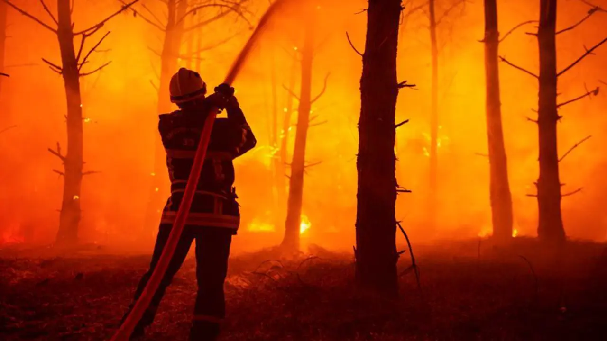
El incendio forestal que se declaró en un macizo a una treintena de kilómetros al oeste de la
ciudad de Perpiñán (Francia), y que ante su progresión condujo el domingo a la evacuación de más
de 10.000 personas, ha quemado hasta este lunes por la mañana 4.600 hectáreas y sigue avanzando.
"Nuestra prioridad del día es evidentemente reanudar esta lucha encarnizada para contener la
propagación en su cabeza y en los flancos", señaló Pierre Regnault de la Mothe, el prefecto
(delegado del Gobierno) del departamento de los Pirineos Orientales, fronterizo con España, en
una conferencia de prensa.
Regnault de la Mothe advirtió que el fuego no estaba fijado, seguía progresando y había calcinado
hasta primera hora del lunes 4.600 hectáreas, es decir más del doble de la cifra que se había
comunicado al caer la noche el domingo.
Cinco personas resultaron heridas
El delegado del Gobierno indicó que había "50 edificios impactados" por el incendio "en grados
diversos". En la extinción trabajaban esta mañana 700 bomberos con 200 vehículos a los que desde
que se hizo de día se sumaron medios aéreos. Cinco personas resultaron heridas, entre ellas dos
bomberos de la extinción.
El prefecto decretó el domingo por la tarde la evacuación de 26 localidades del entorno del
incendio, en concreto todas las del macizo de Les Aspres e Ille-sur-Têt, al tratarse de una zona
difícilmente accesible con vehículos. Insistió en que "la evacuación se hizo de forma ordenada"
y no quiso pronunciarse sobre cuándo podrían volver esos habitantes a sus casas.
Los Pirineos Orientales es uno de los siete departamentos de la fachada mediterránea francesa que
este lunes vuelve a estar en el máximo nivel de riesgo de incendios forestales. También es uno
de los 16 departamentos en alerta naranja por el calor y, como ya ocurrió el domingo, esta tarde
las temperaturas allí subirán hasta 36-39 grados.
Fuente
Diez años de La Manada, la violación que activó la cuarta ola del feminismo y cambió la forma de
juzgar la violencia sexual
En una clase de la universidad, el médico forense Miguel Lorente dibujó una vez un rectángulo con
tiza en el suelo. 2,73 metros de largo y un ancho irregular de entre un metro y un metro y
medio: son las dimensiones del habitáculo en el que cinco hombres acorralaron y violaron a una
joven de 18 años durante los Sanfermines de 2016. Después, pidió a seis de sus alumnos que
entraran y estos vieron que apenas había espacio para moverse. Acto seguido, les preguntó: "¿Eso
intimida o no?". Los estudiantes entonces lo tuvieron claro, pero hace ahora diez años esa
respuesta no fue tan contundente para la Justicia, que inicialmente consideró que ser sometida a
múltiples penetraciones mientras uno de ellos grababa los hechos con un móvil no era
suficientemente intimidatorio porque la víctima no se había resistido con uñas y dientes.
La violación grupal de La Manada desencadenó uno de los procesos judiciales más controvertidos de
los últimos años y un estallido social que activó la cuarta ola del feminismo y que acabaría
materializándose en una reforma del Código Penal con la ley del 'solo sí es sí'. El "No es
abuso, es violación" nació entonces de los gritos de indignación de miles de personas tras la
sentencia de la Audiencia Provincial de Navarra, que en 2018 condenó a los cinco acusados a
nueve años de prisión, pero no por una agresión sexual, sino por un delito continuado de abuso
sexual, pues los magistrados no apreciaron intimidación en los hechos. En ese fallo se recogió
el voto particular del juez Ricardo González, que pidió la absolución de los agresores y llegó
incluso a enmarcar los hechos en un "ambiente de jolgorio y regocijo". Estas declaraciones
terminaron de encender la rabia de una sociedad que se revolvió ante la brutalidad de los hechos
y cuestionó la tendencia a culpabilizar a las víctimas por su comportamiento ante un hecho
traumático, en lugar de centrar la responsabilidad en el agresor.
Tuvieron que pasar tres años hasta que el Tribunal Supremo corrigiese las sentencias anteriores y
concluyera que, efectivamente, lo que sufrió esa joven en la madrugada del 7 de julio de 2016 en
Pamplona había sido una agresión sexual. La pena pasó de nueve a quince años de prisión y la
sentencia fijó una doctrina que marcaría la interpretación de los delitos sexuales en los años
siguientes. Vicente Magro fue uno de los cinco magistrados que elaboraron esa sentencia
histórica. "Nosotros, en base a los hechos probados, entendimos que la conducta era
intimidatoria. Era un hecho objetivo, porque fueron cinco personas en un portal", relata a
20minutos.
Fuente
Incendios en España, en directo | La Guardia Civil abre una investigación por el incendio de
Castellón: "No parecen causas naturales"
En plena ola de calor, numerosos incendios han puesto en jaque a los servicios de extinción en
buena parte de España. El que más preocupa este lunes es el declarado en Soneja, en la provincia
de Castellón, donde un amplio dispositivo de bomberos de distintos cuerpos de la Comunidad
Valenciana, del Ministerio de Transición Ecológica y de la Unidad Militar de Emergencias (UME)
están trabajando desde la madrugada para mantener el perímetro del fuego bajo control.
Además, la delegada de Gobierno en la Comunidad Valenciana, Pilar Bernabé, ha asegurado que el
foco de este incendio está "muy localizado", por lo que el Seprona de la Guardia Civil ha
abierto ya una investigación para esclarecer el origen de las llamas. "No parece que se deba a
causas naturales", ha añadido Bernabé.
Por otro lado, en Cataluña, los bomberos de la Generalitat ya han conseguido estabilizar el
incendio de la Bisbal d'Empordà (Girona) y también se han estabilizado los declarados en
Loporzano (Huesca), La Castilleja (Córdoba) y Ribota de Sajambre (León), entre otros
Declaran el incendio de Castillejo como desastre natural
El Boletín Oficial de la Junta de Andalucía ha publicado este lunes el acuerdo del 1 de julio de
2026 del Consejo de Gobierno por el que se declara desastre natural con incidencia en el
potencial productivo agrario el incendio de Villanueva de los Castillejos, que se originó el 8
de junio y que calcinó 6.310 hectáreas, viéndose afectados, además, los términos municipales de
Alosno, Gibraleón y San Bartolomé de la Torre. Según indica el anuncio del BOJA, el pasado 8 de
junio se originó en el término municipal de Villanueva de los Castillejos un incendio forestal
que afectó, además, a los términos municipales de Alosno, Gibraleón y San Bartolomé de la Torre,
todos ellos en la provincia de Huelva. La magnitud del evento activó de forma inmediata el Plan
de Emergencia por Incendios Forestales de Andalucía (Plan Infoca) que puso en marcha un amplio
dispositivo de emergencia que, durante las cuatro jornadas que duró el incendio, movilizó a más
de 500 profesionales de distintas administraciones y organismos, convirtiéndose en una de las
intervenciones más complejas de este inicio de la época de peligro alto de incendios forestales
en Andalucía.
Fuente
Un muerto y siete heridos en dos accidentes casi simultáneos en Madrid
Una persona ha muerto y otras siete han resultado heridas en dos accidentes de tráfico ocurridos
durante la madrugada de este lunes, casi de manera simultánea, en Madrid, según ha informado el
Servicio de Emergencias del Ayuntamiento.
El accidente mortal ha ocurrido en la confluencia de las carreteras M-31 y M-50, donde un
vehículo "ha dado varias vueltas de campana y ha pillado y atrapado a la persona fallecida", ha
explicado Sara Montero, supervisora de guardia del Servicio de Asistencia Municipal de Urgencia
y Rescate (Samur).
En este siniestro también han resultado heridos los tres acompañantes que "han sido trasladados
en unidades de soporte vital básico y soporte vital avanzado", ha añadido Montero, quien no ha
precisado a qué centros hospitalarios han sido evacuados, ni ha ofrecido más datos sobre el
estado de las víctimas.
Vehículo caído sobre la A-4
De forma prácticamente simultánea ha tenido lugar otro accidente en la confluencia de la A-4 con
la M-45, donde un vehículo se ha salido de la vía y ha caído sobre la citada autovía.
"Afortunadamente, no ha cogido a otros vehículos que estaban circulando por esa vía", ha
señalado Montero.
En dicho siniestro han resultado heridos tres hombres y una mujer, de edades entre los 19 y 20
años, que "han sido trasladados a distintos hospitales con pronóstico potencialmente grave", ha
indicado Montero.
Fuente